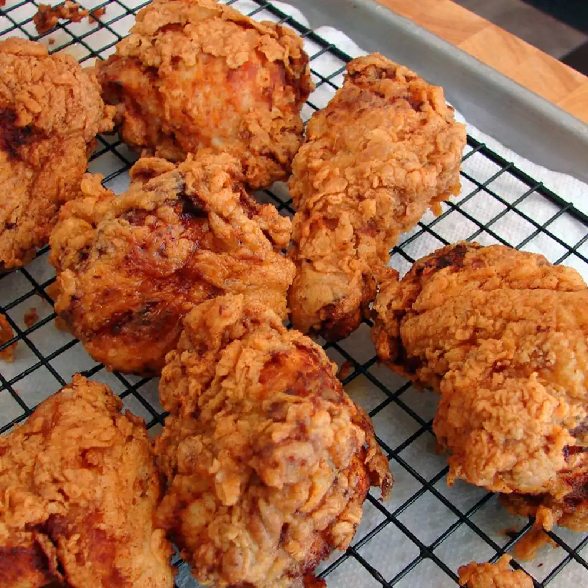

Fried chicken

Description
Buttermilk fried chicken that's incredibly tender, thanks to tangy buttermilk. After the buttermilk soak, dredge the chicken pieces in seasoned flour and fry them in hot oil until crisp and golden
Ingrediends
- 1 (3 1/2) pound chicken, cut into 8 pieces
- 1 teaspoon black pepper
- 1 teaspoon salt
- 1 teaspoon paprika
- ½ teaspoon white pepper
- ¼ teaspoon dried rosemary
- ¼ teaspoon ground thyme
- ¼ teaspoon dried oregano
- ¼ teaspoon dried sage
- ¼ teaspoon cayenne pepper
- 2 cups buttermilk
Seasoned Flour:
- 2 cups flour
- 1 teaspoon salt
- ½ teaspoon paprika
- ½ teaspoon cayenne pepper
- ½ teaspoon garlic powder
Steps
Step 1
- Toss chicken pieces, black pepper, salt, paprika, white pepper, rosemary, thyme, oregano, sage, and cayenne together in a large bowl.
Step 2
- Stir in buttermilk until chicken is evenly coated. Cover and refrigerate for 6 hours.
Step 3
- Combine flour, salt, paprika, cayenne, garlic powder, white pepper, and onion powder in a large shallow dish.
Step 4
- Remove chicken from buttermilk and dredge each piece in seasoned flour; shake off any excess and transfer to a plate.
Step 5
- Heat peanut oil in a large Dutch oven to 350 degrees F (175 degrees C).
Step 6
- Add chicken pieces to the hot oil and fry for 10 minutes. Turn chicken pieces and fry for another 10 to15 minutes.
Step 7
- Transfer fried chicken to a cooling rack set over a paper towel-lined baking sheet. Let sit for 10 minutes before serving.